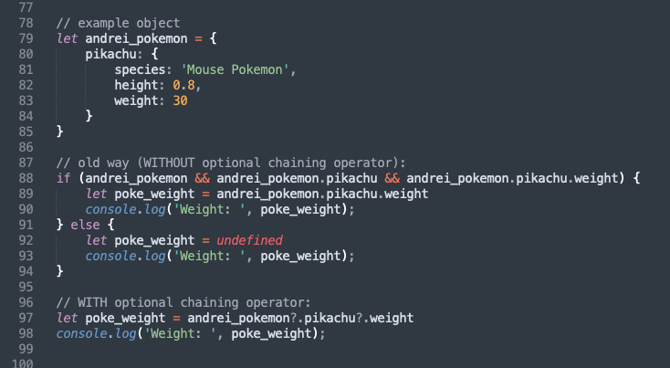
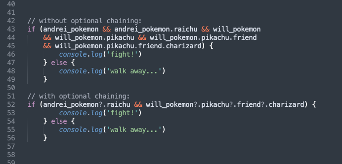
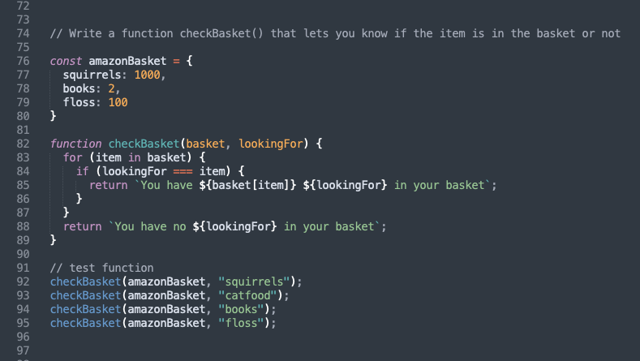
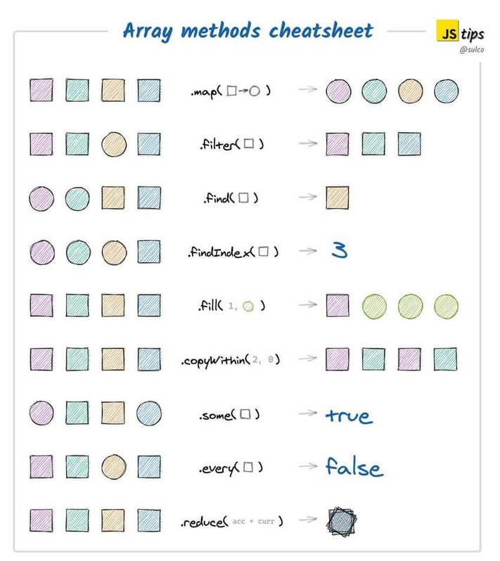

JavaScript Notes
Table of Contents
- Learning Resources
- Data Types
- Variables and Scope
- Operators
- Advanced Operators
- Loops and Conditionals
- Functions
- Advanced Functions
- Arrays
- Advanced Arrays
- Objects
- Advanced Objects
- Database examples
- DOM
- Event Listeners and Callback Functions
- Destructuring
- Debugging
Learning Resources
- The Modern JavaScript Tutorial - From the basics to advanced topics with simple, but detailed explanations.
- DevDocs.io JavaScript documentation
- Eloquent JavaScript (3rd Ed.)
- freeCodeCamp JavaScript Course
- 30 Seconds of Code: JavaScript Snippets - The JavaScript snippet collection contains a wide variety of ES6 helper functions. It includes helpers for dealing with primitives, arrays and objects, as well as algorithms, DOM manipulation functions and Node.js utilities.
- How to think like a programmer: Lessons in problem-solving
- Reserved words (keywords) in JavaScript
- 8 techniques to write cleaner JavaScript code
- Truthy and Falsy Values: When All is Not Equal in JavaScript
- Semicolons in JavaScript: to use or not to use?
- Rest syntax and Spread syntax (...)
- Why are there so many curly braces in JS?
- Javascript Fundamentals — Call Stack and Memory Heap
- 10 JavaScript Naming Conventions
- JavaScript Modules explained with examples
Data Types
In JavaScript, data types are split into two categories, and the computer treats each one differently. We have primitive data types and reference data types.
Primitive Types
A primitive value/data type is data that is not an object and has no methods. There are 7 primitive data types: string, number (including NaN), bigint, boolean, undefined, symbol, and null.
But you might be wondering about strings, because they do have methods. The fact is, JavaScript converts primitive strings to string objects, so that it’s possible to use string object methods.
Reference Types
Object, Array, and Function (which are all types of objects) are known as reference or composite data types.
Reference / composite data types, unlike primitive data types, are dynamic in nature. That is, they do not have a fixed size. Most of them are considered as objects, and therefore have methods. Examples of such data types include arrays, functions, collections, and all other types of objects.
The equality operator and data types:
Using the equality operator gives an example of how primitive and reference data types differ.
If you created two variables of a primitive data type (say, number) and gave them an identical value (e.g. let a = 10 and let b = 10) then the following would return true:
a === b
However, if you created two objects with identical contents (e.g. let array1 = [10] and let array2 = [10]) then the following would return false:
array1 === array2
This is because the comparison of objects isn't a comparison of values, but a comparison of references; they are equal if, and only if, they refer to the same base object.
If you assigned array2 to array1 (array2 = array1), then array1 === array2 would return true, as array2 now references array1 (it points to the same location in program memory).
Note: If you reassigned array1 or array2 (e.g. array1 = [10,11];) then other arrays would no longer reference it and array1 === array2 would return false. However, if you updated its contents using a method such as array.push(), both the original array and any others referencing it would be updated and retain the connection.
Learning resources:
Variables and Scope
Variables allow us to store, change and access data such as numbers, strings, and objects.
The three keywords to declare a variable in JavaScript:
Note: Let and Const are now preferred and Var is mainly used in legacy code.
A commonly accepted practice is to use const as much as possible, and let in the case of loops and reassignment.
Var
- Global or function/local scope
- Can be redeclared and/or updated
- Hoisted to the top and initialised with undefined
Let
- Block scope
- Can be updated but not redeclared
- Hoisted to the top but not initialised
Const
- Block scope
- Read-only: cannot be updated or redeclared (with exception of object properties)
- Hoisted to the top but not initialised. Must be initialised during declaration
- Note: A common practice when naming constants is to use all uppercase letters, with words separated by an underscore.
E.g. const FAV_PET = "Cats";
Scope in JavaScript
Scope is a concept that refers to where values and functions can be accessed.
JavaScript has 3 types: Block scope, Function scope, and Global scope.
Learning resources:
- Understanding Variables, Scope, and Hoisting in JS
- Var, Let, and Const - what's the difference?
- Video: What is Hoisting in JavaScript?
- w3Schools guide to JavaScript Scope
- CodeCademy mini course on Scope in JS
Operators
An operator is a symbol that acts like a function. JavaScript operators are used to assign values, compare values, perform arithmetic operations, and more.
Types of Operator in JS
- Arithmetic Operators
- Addition ( + ), subtraction ( - ), multiplication ( * ), division ( / ), modulus ( % ), increment ( ++ ) and decrement ( -- ).
- Exponentiation: To square, cube, (etc), a number, use this syntax:
- const square = (num) => num**2;
- const cube = (num) => num**3;
- Assignment Operator
- Used to assign values to JavaScript variables ( = ).
- String Operators
- The + operator, and the += operator can also be used to concatenate (add) strings.
Note that ES6 syntax allows us to use template strings.
Instead of:
var message = "Hello " + firstName + ", have I met you before? I think we met in " + city + " last summer?";
we can use:
const message = `Hello ${firstName}, have I met you before? I think we met in ${city} last summer`;
- Used in logical statements to determine equality or difference between variables or values ( ==, ===, !=, !==, <, >, <=, >=, ).
- Syntax: variablename = (condition) ? value1:value2;
- Examples:
value1 applies if the condition is true, and value2 applies if false.
voteable = (age < 18) ? "Too young":"Old enough";
let answer = isUserValid(true) ? "You may enter" : "Access Denied";
- These are: && (and), || (or), ! (not).
- Bitwise operators in Javascript are mostly used for numerical conversions/computations, because sometimes they're much faster than their Math or parseInt equivalents.
- Tells you the type of a variable, object, function or expression (e.g. returns boolean, string, number, etc).
- Deletes a property from an object.
- Returns true if the specified property is in the specified object, otherwise false.
- Returns true if the specified object is an instance of the specified object.
- Used to evaluate a JavaScript expression without returning a value.
Learning resources:
Advanced Operators
Optional Chaining Operator ( ?. )
The optional chaining operator lets you read the value of a property located deep within a chain of connected objects, without having to check that each reference in the chain is valid.
It's a shorthand for checking whether objects and object properties exist and can replace or shorten long if statements.
If the object or object property you've referenced doesn’t exist, the program will return undefined rather than throwing an error.
Optional chaining operator examples:

Learning resource:
Nullish Coalescing Operator ( ?? )
The nullish coalescing operator is a logical operator that returns its right-hand side operand when its left-hand side operand is null or undefined, and otherwise returns its left-hand side operand.
The common use case for ?? is to provide a default value for a potentially undefined variable.
Example:
console.log(false ?? 'Default value') // Returns false console.log(null ?? 'Default value') // Returns 'Default value'
The ?? operator can often be used instead of the OR ( || ) operator. Unlike OR, ?? doesn’t check whether a value is generally falsey - it checks whether it’s specifically null or undefined.
In other words, || doesn’t distinguish between false, 0, an empty string "", and null/undefined. They are all the same – falsy values. If any of these is the first argument of ||, then we’ll get the second argument as the result. (The || operator, reading left to right, will evaluate to the first truthy value. If no truthy value is found, the last value is returned.)
Learning resources:
- Guide to the Nullish Coalescing Operator
- Logic Operators with Non-boolean values (Logical OR and Logical AND)
Loops and Conditionals
Loops offer a quick and easy way to do something repeatedly.
You can think of a loop as a computerized version of the game where you tell someone to take X steps in one direction, then Y steps in another. For example, the idea "Go five steps to the east" could be expressed this way as a loop:
for (let step = 0; step < 5; step++) {
// Runs 5 times, with values of step 0 through 4.
console.log('Walking east one step');
}
Types of loop in JS:
- for - loops through a block of code a number of times
- for/in - loops through the properties of an object
- for/of - loops through the values of an iterable object
- while - loops through a block of code while a specified condition is true
- do/while - same as while loop, but executes at least once
- forEach - see this article on how it works
Loop comparison: for, forEach, for/of
Each of these loops will iterate through the example array and console.log each item.
example array:
const basket = ['apples', 'oranges', 'grapes'];
for loop:
for (let i = 0; i < basket.length; i++) {
console.log(basket[i]);
}
forEach loop:
basket.forEach(item => {
console.log(item);
})
for/of loop:
for (item of basket) {
console.log(item);
}
Resource: 3 Flavours of JavaScript Loop and when to use them
Loop comparison part 2: for/in loop
The above types of loop can be used to iterate over an array or string. Objects are non-iterable in JavaScript, but we can iterate (enumerate) over their properties using for/in.
Note: You should not use for...in to iterate over an array where the index order is important, as it iterates in an arbitrary order.
example object:
const detailedBasket = {
apples: 5,
oranges: 10,
grapes: 100
}
for/in loop:
for (item in detailedBasket) {
console.log(item);
}
The above loop would log:
apples oranges grapes
For/in loop example
The above function would return, e.g. "You have 1000 squirrels in your basket" or "You have no catfood in your basket".
Note: the reason that item returns "squirrel" or "books" etc and basket[item] returns 1000, 2, etc, is that on its own, item represents the key of the key/value pair, but using basket[item] - i.e. object[key] - references the value of the key; it's saying "return the value stored in the key basket[item]".
Resource: See the Objects section below for more info on looping over (enumerating) objects.
Conditionals
- if
- else
- else if
- switch statements
- See also: ternary operators
Switch Statement Example
function lunchChoices(choice) {
var response;
switch(choice) {
case "salad":
response = "Nice! Hope you remembered the dressing :)";
break;
case "chocolate":
response = "Chocolate for lunch again?!";
break;
case "pizza":
response = "Want extra mushrooms on that?";
break;
case "soup":
response = "Yum, good winter choice!";
break;
default:
response = "Great, hope you enjoy it!";
}
return response;
}
Learning resources:
Functions
A function in JavaScript is similar to a procedure (a set of statements that performs a task or calculates a value), but for a procedure to qualify as a function, it should take some input and return an output where there is some obvious relationship between the input and the output.
Types of function
Function declaration:
function newFunction() {
}
Function expression:
var newFunction = function() {
};
Note that function expression requires a semi-colon on the end.
Function expressions (aka anonymous functions) are invoked to avoid polluting the global scope. Instead of your program being aware of many different functions, when you keep them anonymous they are used and forgotten immediately.
Simple function example:
function multiply(a, b) {
return a * b;
}
multiply(10, 4);
Note 1: The final line above is calling the function.
Note 2: As soon as you use return in a function, the program exits.
Assigning a function's output to a variable:
let processed; // declare variable outside of function
function processArg(num) { // declare function
return (num + 3) / 5;
}
processed = processArg(7); // call function with argument of 7 and assign output to variable
console.log(processed); // check output (in this example, 2)
Function with conditionals:
function checkDriverAge() {
var age = prompt("What is your age?");
if (Number(age) < 18) {
return "Sorry, you are too young to drive this car. Powering off";
} else if (Number(age) > 18) {
return "Powering On. Enjoy the ride!";
} else if (Number(age) === 18) {
return "Congratulations on your first year of driving. Enjoy the ride!";
}
}
ES6 function features
Arrow Functions
Two "regular functions" compared to an arrow function example:
// Function declaration
function sayHiStranger() {
return 'Hi, stranger!'
}
// Function expression
const sayHiStranger = function () {
return 'Hi, stranger!'
}
// Arrow function
const sayHiStranger = () => 'Hi, stranger'
A more complex arrow function:
const array = [1, 2, 10, 17]; const halve = [] array.forEach((num) => halve.push(num / 2)) console.log(halve);
The above example calls the forEach function as a method on the 'array' variable; it iterates through and halves each number in the array, then returns a new array (named 'halve') containing the halved numbers.
num is a variable representing each number of the array, as the function iterates through and halves them.
Formats for arrow functions:
One-line function:
let oneliner = x => x*2;
Multi-line function:
let multiliner = x => {
x = x*2;
return x;
}
NOTE: if you use {braces} you need a return statement or the function won't, well, function! Example:
const dragons = ['Tim', 'Jonathan', 'Sandy', 'Sarah']; // example array
// YES, THIS WORKS - RETURN IS IMPLICIT
const filteredArray = dragons.filter(name => name.includes('Jon'))
// YES, THIS WORKS TOO
dragons.filter(name => { return name.includes('Jon')})
// NO, THIS WILL RUN BUT NOT WORK PROPERLY!
const filteredArray = dragons.filter(name => {name.includes('Jon')})
Default Arguments
This means that if a function doesn't return an argument, a default argument will be used:
Without default argument
function isValidAge(age) {
return age
}
With default argument of age 10
function isValidAge(age=10) {
return age;
}
Same as above, but as an arrow function
const isValidAge = (age = 10) => age;
Learning resources:
- MDN guide to JavaScript Functions
- FreeCodeCamp on when to use a function expression instead of a function declaration
- Arrow Functions (w3Schools short guide)
- Arrow Functions (sitepoint guide)
- 5 Differences Between Arrow and Regular Functions
Advanced Functions
Closures
A function creates a closure when it returns a reference to a variable in its parent scope. To put it another way, a closure gives you access to an outer function's scope from an inner function.
The child scope always has access to the parent scope - so variables will be remembered by the functions that need them. However, the parent scope doesn’t have access to the child scope.
Resource: Why would a program use a closure?
Currying
Currying is the process of converting a function that takes multiple arguments, into a function that takes them one at a time.
Example:
const multiply = (a, b) => a * b;
Becomes:
const curriedMultiply = (a) => (b) => a * b;
Which is called this way: curriedMultiply(3)(4);
Why would we want to do this? Because the function is now more extensible; e.g. we can create a “multiply by 5” function like this:
const multiplyBy5 = curriedMultiply(5);
Composition
Composition is putting two functions together to form a third function, where the output of one function is the input of the other.
Resource: Function composition in JavaScript
Trailing commas
Trailing commas (sometimes called "final commas") can be useful when adding new elements, parameters, or properties to JavaScript code.
For instance: if you want to add a new property, you can add a new line without modifying the previously last line, if that line already uses a trailing comma.
Example:
const example = (a, b, c, d,) => console.log(a); example(1,2,3,4,)
Note that JSON disallows trailing commas.
Functional purity
We want to minimise side-effects - the function should affect the data being input to it, without creating side-effects in the outer world of the program.
We also always want to return a value, not 'undefined'.
When a function is deterministic, it means that the function behaves the same way every time - when you enter the same input, you always get the same results.
A pure function is deterministic and avoids side-effects; it depends only on its input elements, not on any state or data change during execution (side-effects).
This is a key part of avoiding bugs. If the function always does the same thing, it helps you avoid random errors.
Resource: Writing cleaner JavaScript code
Function vs Method: terminology
Is there a difference between a function and a method?
A method, like a function, is a set of instructions that perform a task. The difference is that a method is associated with an object, while a function is not. A function is directly called by its name, whereas a method includes a code that is called by the object's name.
Method chaining
Method chaining is the mechanism of calling a method on another method of the same object. This means a cleaner and more readable code.
Example:
fixedEmail = email.trimStart().trimEnd()
In the above example, “email” is a string which has access to all the String methods; using method trimStart() on it returns another string which also has access to String methods.
Resource: Tutorial: Method chaining in JavaScript
JavaScript Methods: learning resources
- Introduction to JS methods and the 'this' keyword
- List of JavaScript methods
- How to use object methods in JavaScript
- Three Ways to Reverse a String in JavaScript
Recently added string methods:
Arrays
In JavaScript, an array is a single variable that is used to store different elements. It is often used when we want to store a list of elements and access them by a single variable.
Resource: W3Schools JS Array Reference
Example 1: Using this array,
var array = ["Banana", "Apples", "Oranges", "Blueberries"];
- Remove the Banana from the array.
- Sort the array in alphabetical order.
- Put "Kiwi" at the end of the array.
- Remove "Apples" from the array.
- Sort the array in reverse order. (Not alphabetical, but reverse the current Array, i.e. ['a', 'c', 'b'] becomes ['b', 'c', 'a'])
array.shift();
array.sort();
array.push("Kiwi");
array.shift();
or
array.splice(0, 1);
Note: How to use splice()
array.reverse();
You should have at the end:
["Kiwi", "Oranges", "Blueberries"]
Example 2: Using this array,
var array = ["Banana", ["Apples", ["Oranges"], "Blueberries"]];
How would you access each of these?
Banana: array[0]
(the first item)
Apples: array[1][0]
(the first item inside the second array)
Oranges: array[1][1][0]
(the first item inside the second array, inside the second array)
Blueberries: array[1][2]
(the third item inside the second array)
Advanced Arrays
Any time you think of looping over an array, you’ll probably want to use one of these three:
Map
This method allows us to create a new array from a pre-existing one, by iterating over and performing an action on each value within it.
Put another way, map() takes each element from an original array, transforms it with a function that you specify, and adds the result to a new array in the same order.
Map has some similarity to the forEach method; however, map always requires a return element.
Example, part 1: Doubling an array using forEach:
const array = [1, 2, 10, 17];
const double = []
const newArray = array.forEach((num) => {
double.push(num * 2);
})
console.log(double);
Example, part 2: The same as above, using map:
const array = [1, 2, 10, 17]; const mapArray = array.map(num => num * 2); console.log(mapArray);
(Here's a more detailed comparison of the two methods.)
Filter
This method allows us to create a new array by iterating over and then filtering out only the required elements from a pre-existing array.
Here's an example, using the array from the example above:
const filteredArray = array.filter(num => num > 5);
In the example above, the new array filteredArray would only contain numbers above 5.
Reduce
This method allows us to reduce an array to the sum of the numerical elements it consists of (plus an accumulator value, which can be set to 0).
Here's an example, again using the array from the map example above:
const reduceArray = array.reduce((accumulator, num) => {
return accumulator + num
}, 0);
In the example above, console.log(reduceArray) would produce the result 30.
Note that the accumulator argument is defined within the function (and the num argument represents each element of the array as it's iterated over by the reduce() method).
JavaScript Array Methods: Cheat Sheet
Learning resources:
- 4 Ways to Populate an Array in JavaScript
- Solving the Two-Sum Problem in JavaScript, Three Ways : Working with arrays algorithmically (binary search and hash tables)
- List of JavaScript Array Methods: Quick examples of .map(), .filter(), .sort(), .forEach(), .concat(), .every(), .some(), .includes(), .join(), .reduce(), .find(), .findIndex(), .indexOf(), .fill(), .slice(), .reverse(), .push(), .pop(), .shift(), .unshift()
- Using .sort() to sort alphabetically or numerically
- Simplify your JavaScript – Use .map(), .reduce(), and .filter()
- How to flatten an array - e.g. [1, 2, [3, [4, 5, 6]] to [1, 2, 3, 4, 5, 6]
- JavaScript Array Explorer - find the array method you need without digging through the docs!
Objects
In JavaScript, an object is a standalone entity, with properties and type. Compare it with a cup: a cup is an object, with properties such as a color, a design, weight, a material it is made of, etc. In the same way, JavaScript objects can have properties which define their characteristics.
Comparing Object and Array
Objects and arrays are complex data types that hold multiple values, as opposed to primitive data types that hold a single value.
Objects are an unordered set of key-value pairs. The key is a text identifier that must be unique within the object and the value can be either a primitive or complex data value.
Arrays are an ordered list of values that do not need to be unique and can be various data types. The position in the list is called an index, which is zero-based, meaning the first item in the array has an index of 0.
Arrays, like strings, are JavaScript iterables - meaning that it's possible to iterate through them. Objects are not iterables in JavaScript, so we have to use other techniques to enumerate through object properties. (See also the Database Example below for an example of how object properties can be accessed using a for loop, when the object/s are contained in an array.)
Example of an object containing an array:
const witch = {
name: "Mildred",
age: 13,
powerLevel: 6,
spells: ["broomstick", "summon", "cat"]
};
How to access the witch's "summon" spell:
witch.spells[1]
Note: if the object property contains a space, you'll need to use bracket notation instead of dot notation to access it. E.g. if powerLevel were written "Power Level":
witch["Power Level"];
Example of an array containing objects:
const userList = [
{
username: "Sara",
password: "123"
},
{
username: "Maddy",
password: "jello33"
}
];
How to access Sara's password:
userList[0].password
Example of an object containing a function:
const witch = {
name: "Mildred",
fly: function() {
// add function here;
}
};
How to call the witch's fly function:
witch.fly()
Note: a function inside an object is a method. So fly is a method of witch
(and log is a method of the object named console, when we use console.log).
Accessing object properties with variables
const dogs = {
Fido: "Mutt",
Hunter: "Doberman",
Snoopie: "Beagle"
};
const myDog = "Hunter";
const myBreed = dogs[myDog];
console.log(myBreed); // displays Doberman
Terminology: key/value pairs
The property pairs within objects are described variously as:
key / value
property name / property value
property / value
ECMA6 object syntax
Say you want to create an object that stores these variables:
const a = 'test'; const b = true; const c = 789;
The older way of doing it would be:
var exampleObj = {
a: a, //
b: b,
c: c
};
But using ECMA6 syntax we can do this, if both the property and value are the same:
const exampleObj = {a, b, c};
Advanced Objects
Context and Instantiation Patterns
In JavaScript, “context” refers to an object. Within an object, the keyword “this” refers to that object (i.e. “self”), and provides an interface to the properties and methods that are members of that object. When a function is executed, the keyword “this” refers to the object that the function is executed in.
Resource: Why is the word “this” so important in JavaScript?
Instantiation refers to the creation of an object. There are multiple patterns that have evolved over time that are used to achieve this. When instantiation patterns are used correctly, they can effectively manage inheritance and provide greater code re-usability when creating multiple instances of objects.
Instantiation example:
class Animal {
constructor(name, type, colour) {
this.name = name;
this.type = type;
this.colour = colour;
}
}
class Mammal extends Animal {
constructor(name, type, colour) {
super(name, type, colour)
}
speak() {
console.log(`Hello! I'm a ${this.colour} ${this.type} and my name is ${this.name}!`);
}
}
const cat1 = new Mammal("Myst", "Persian cat", "grey");
Running the above code and then calling cat1.speak() would create:
Hello! I'm a grey Persian cat and my name is Myst!
Resources:
- JavaScript Instantiation in 5 Minutes
- Quick Guide to Instantiation Patterns in JS - explains the constructor() function and the new and class keywords
- Understanding Classes in JavaScript
Pass by Value and Pass by Reference
See section above on the equality operator and data types to understand why objects are passed by reference.
Passing by reference can be a useful way to save resources, by assigning the data from one object to another and storing it in a single location. However, sometimes you'll want to clone an object so that it can be stored and modified separately. Here's how to do that for both objects and arrays (which are also a type of object):
Cloning an object
Using Object.assign() to clone or merge objects
Cloning an array
For this, you can use concatentation. Example:
let a = [1,2,3,4]; let b = [].concat(a);
The concat() method joins two arrays together, so here we've simply joined array a to the empty array b, to create a copy. We can then modify b without affecting a, like this:
b.push(5,6);
Type Coercion
Type coercion is the process of converting value from one type to another (such as string to number, object to boolean, and so on). Any type, be it primitive or an object, is a valid subject for type coercion.
Type coercion can be explicit or implicit. When a developer expresses the intention to convert between types by writing the appropriate code, like Number(value), it’s called explicit type coercion (or type casting). Since JavaScript is a weakly-typed language, values can also be converted between different types automatically, which is known as implicit type coercion.
In 90% of use cases, it’s better to avoid implicit type coercion. However, you might face questions about type coercion during interviews for JavaScript developer positions.
In general, remember to use the strict equality operator === rather than the loose equality operator == (unless you have a very specific reason to use the loose version!)
Resource: fCC: JavaScript Type Coercion Explained
Object.values and Object.entries
With an array, we can use methods like .map(), .filter() and .reduce(), but we can’t do that directly with an object (as objects are not iterable in JS). However, we can convert an object into an array using Object.values and Object.entries, so that we can iterate (or rather, enumerate) through and use array methods on it.
Example:
let festiveCharacters = {
username0: "Santa",
username1: "Rudolf",
username2: "MrGrinch"
}
Object.entries(festiveCharacters).forEach(entry => console.log(entry);)
Which returns the following data as arrays:
[ "username0", "Santa" ] [ "username1", "Rudolf" ] [ "username2", "MrGrinch" ]
Example 2, using same object:
Object.entries(festiveCharacters).map(entry => {
return entry[1] + entry[0].replace("username", "");
})
Which returns:
[ "Santa0", "Rudolf1", "MrGrinch2" ]
Resource: How to convert objects to arrays and vice-versa
Note: The older method Object.keys worked similarly.
Database Examples
"Dragbook" Database
Uses variables, functions, conditionals, operators, a loop, arrays and objects:
/* User database containing names and passwords
(structure is an array containing objects) */
var database = [
{
username: "RuPaul",
password: "HeyHunty!",
},
{
username: "Baga",
password: "ChipZ",
},
{
username: "Heidi",
password: "servingtheT",
}
];
// Newsfeed database (array of objects)
var newsFeed = [
{
username: "RuPaul",
timeline: "Well, if you can't love yourself...",
},
{
username: "Baga",
timeline: "Oi, slapper! Who asked you anyway?",
},
{
username: "Heidi",
timeline: "Ooh, feeling shoft and shupple!",
},
];
// User validation function
function isUserValid(username, password) {
for (var i=0; i < database.length; i++) {
if(database[i].username === username
&& database[i].password === password) {
return true;
}
}
return false;
}
// Sign-in function
function signIn(username, password) {
if (isUserValid(username, password)) {
console.log(newsFeed);
} else {
alert("Sorry, wrong username and/or password");
}
}
// Obtain arguments for sign-in function
var userNamePrompt = prompt("What\'s your username?");
var passwordPrompt = prompt("What\'s your password?");
// Call the sign-in function
signIn(userNamePrompt, passwordPrompt);
"Record Collection" Database
This example shows ways of updating properties and values in an object and in the arrays it contains:

Note 1: the final condition could be written more simply, as the first two conditions have excluded all other options:
} else {
records[id][prop] = value;
}
Note 2: the second condition can also be simplified:
} else if (prop === "tracks") {
records[id][prop] = records[id][prop] || [];
records[id][prop].push(value;)
}
The second line will create an empty array named "tracks" if one doesn't already exist for that records[id].
The DOM
The Document Object Model (DOM) is a Web API used to build websites.
In more detail, it's a programming interface for web documents, which represents the page so that programs can change the document structure, style, and content. The DOM represents the document as nodes and objects; that way, programming languages (usually JavaScript) can interact with the page.
Things you can do with the DOM:
- Change/remove the HTML elements or attributes on a page
- Change the CSS styles
- React to existing HTML events (e.g. 'onclick') or create new ones
Resource: List of DOM properties and methods
DOM Selectors
getElementsByTagName
getElementsByClassName
getElementById
querySelector
querySelectorAll
Note: 'querySelector' is preferred to 'getElement...' in modern programming
getAttribute
setAttribute
parentElement
children
Changing Styles using DOM Selectors
style.{property} (inline style - OK in some circumstances)
className (wipes out any existing classes and sets a new one)
classList (adds or removes classes without affecting existing ones)
- classList.add
- classList.remove
- classList.toggle
The .innerHTML method is extremely useful for setting or getting the HTML inside of an element - however, it can be dangerous. Here's how to use .innerHTML safely.
Example 1: Using querySelector to change CSS of h1
var h1 = document.querySelector("h1");
h1.className = "large-red-title";
Note: the class is added to the linked CSS page as usual.
Example 2: Creating a responsive topnav
// Toggle between adding and removing the "responsive" class to topnav when the user clicks on the icon
function myFunction() {
var x = document.getElementById("myTopnav");
x.classList.toggle("responsive");
}
Caching Selectors (for performance)
Accessing the HTML DOM is very slow, compared to other JavaScript statements. If you expect to access a DOM element several times, access it once and use it as a local variable:
const obj = document.getElementById("demo");
obj.innerHTML = "Hello";
The two examples above also cache selectors in variables.
However, avoid unnecessary variables. Don't create new variables if you don't plan to save values (more info on JS performance here).
JavaScript DOM: Cheat Sheet

Event Listeners and Callback Functions
An event listener is a procedure in JavaScript that waits for an event to occur. A simple example of an event is a user clicking the mouse or pressing a key.
Any number of event handlers can be added to a single element without overwriting existing event handlers.
Example 1: Simple Event Listener
var button = document.getElementsByTagName("button")[0];
button.addEventListener("click", function() {
// add function here
})
The example above does the following:
- Selects the button element (note the index) and caches it in a variable named "button".
- Creates an event listener which listens for a click on the button and then carries out the connected function.
Example 2: To Do List
var button = document.getElementById("enter");
var input = document.getElementById("userinput");
var ul = document.querySelector("ul");
function inputLength() {
return input.value.length;
}
function createListElement() {
var li = document.createElement("li");
li.appendChild(document.createTextNode(input.value));
ul.appendChild(li);
input.value = "";
}
function addListAfterClick() {
if (inputLength() > 0) {
createListElement();
}
}
function addListAfterKeypress(event) {
if (inputLength() > 0 && event.keyCode === 13) {
createListElement();
}
}
button.addEventListener("click", addListAfterClick);
input.addEventListener("keypress", addListAfterKeypress);
Note the three methods we haven't seen before:
- .createElement
- .appendChild
- .createTextNode
Callback functions
The program above uses two callback functions:
button.addEventListener("click", addListAfterClick);
input.addEventListener("keypress", addListAfterKeypress);
We may have expected the syntax to look like this:
button.addEventListener("click", addListAfterClick());
input.addEventListener("keypress", addListAfterKeypress(event));
However, when that line of javascript runs, we don't want the addListAfterClick function to run because we are just adding the event listener now to wait for click or keypress.
We want to let it know, though, that we want this action to happen when a click happens. So the function now automatically gets run (gets the () added) every time the click happens. So we are passing a reference to the function without running it.
Learning resources:
Destructuring
Destructuring is a JavaScript feature that allows us to extract data from arrays, objects, and maps and set them into new, distinct variables. Destructuring allows us to extract multiple properties, or items, from an array at a time.
Example: extracting properties from an object, with and without destructuring:
// example object:
const obj = {
player: "Cate",
experience: 80,
wizardLevel: true
}
// extracting properties without destructuring:
const player = obj.player;
const experience = obj.experience;
let wizardLevel = obj.wizardLevel;
// extracting properties WITH destructuring:
const { player, experience } = obj;
let { wizardLevel } = obj;
Learning resources:
- What is object destructuring in JavaScript?
- Simple guide to destructuring objects
- More detailed destructuring guide
Debugging
Debugging is a multistep process that involves identifying a problem, isolating the source of the problem, and then either correcting the problem or determining a way to work around it. The final step is to test the correction or workaround and make sure it works.
10 Common JavaScript Bugs and How to Avoid Them
Results of a Study on JavaScript Bugs (explains most common ones)
Try/Catch
A try / catch block is used to handle errors in JavaScript. You use this when you don't want an error in your script to break your code.
Notes:
- try...catch only works for runtime errors. For try...catch to work, the code must be runnable. In other words, it should be valid JavaScript. It won’t work if the code is syntactically wrong, for instance it has unmatched curly braces.
- try...catch works synchronously. If an exception happens in “scheduled” code, like in setTimeout, then try...catch won’t catch it.
How to use a try/catch block in JavaScript
Chrome / FireFox DevTools
As developers, we’ve traditionally rooted out bugs in our programs by using meaningful log statements. JavaScript has the famous console.log() method for that. But while log statements are good, they're less efficient than a tool that enables you to carry out step-by-step debugging.
What are browser developer tools?
Chrome DevTools: The definitive guide to JavaScript Debugging
Debugging example in Chrome DevTools
The FireFox JavaScript Debugger (MDN guide)
Debugging in VS Code
How would you like to have your entire web development experience, all of the tools you need, completely inside VS Code? In addition to our code and terminal we now have a browser, browser dev tools, and... wait for it, the console!!
VS Code Has Dev Tools & Console!! No Need For Chrome Anymore (YouTube)
Guide to VS Code's built-in debugger